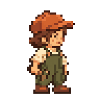

Mina 48×48 중립 프레임 후보
사용자가 이 중립 프레임을 승인했습니다. 후속 Idle·Work 스타일 테스트
승인된 v1 외형을 Python으로 변환한 실제 48×48 RGBA PNG입니다.
자동 형식 검사는 통과했습니다. 시각 승인은 대기 중입니다. 색상 32개, 알파 0/255, 기준점 (24,44), 발 접점 y=44. 2×·3× PNG는 원본 픽셀을 정확히 반복합니다. 화면의 CSS 크기를 유지하며 브라우저 확대 설정에 따라 물리 크기는 달라질 수 있습니다.
승인된 외형과 후보 비교
 승인된 외형 시안
승인된 외형 시안

48×48 후보 — 3×
실제 프레임의 최근접 1×·2×·3×
1× · 48×48
2× · 96×96
3× · 144×144
1× · 48×48
2× · 96×96
3× · 144×144
1× · 48×48
2× · 96×96
3× · 144×144
확인할 사항
- 주황색 모자와 머리·몸통 비율이 승인한 Mina의 특징을 유지하는가?
- 1×에서 작은 빌더로 인식되고, 작업용 망치가 충분히 읽히는가?
- 밝고 어두운 배경에서 외곽과 부츠가 식별되는가?
망치의 세부 형태는 1×에서 약하게 보입니다. 자동 색상 제한과 발 접점 검사로 이 가독성을 승인하지는 않습니다. 이 후보에는 작업·이동 애니메이션이 없고 게임 카탈로그에 연결하지 않았습니다.
48×48 PNG · 배경별 검토 보드 · 변환·검사 기록 · 생성 출처와 재현 방법